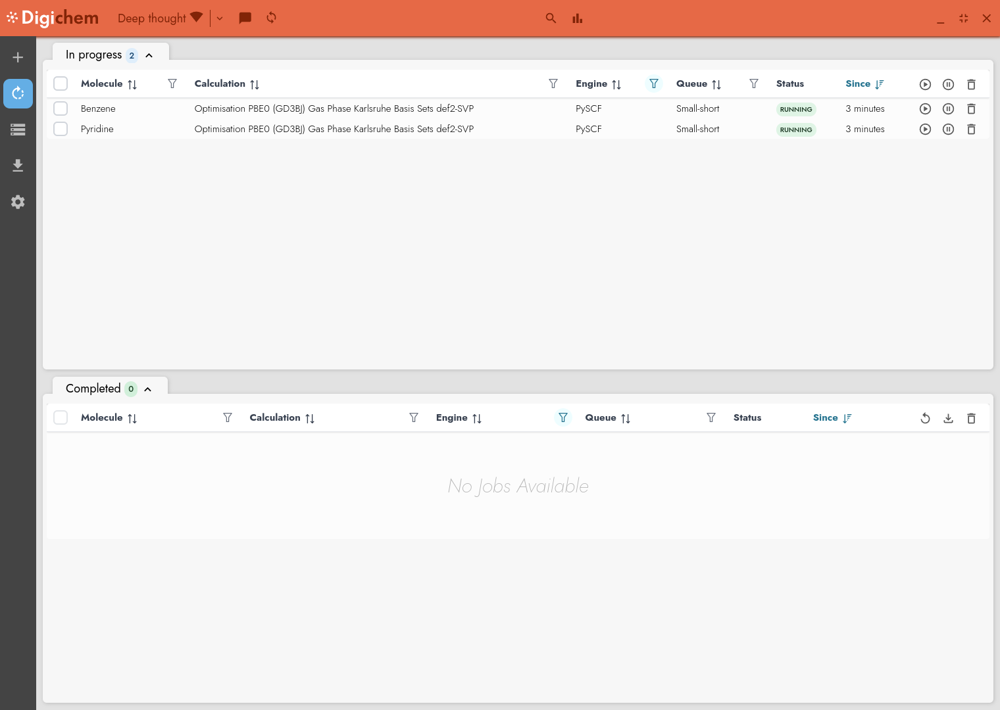
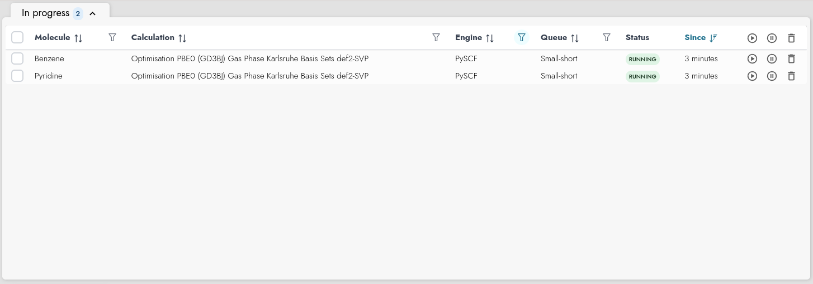
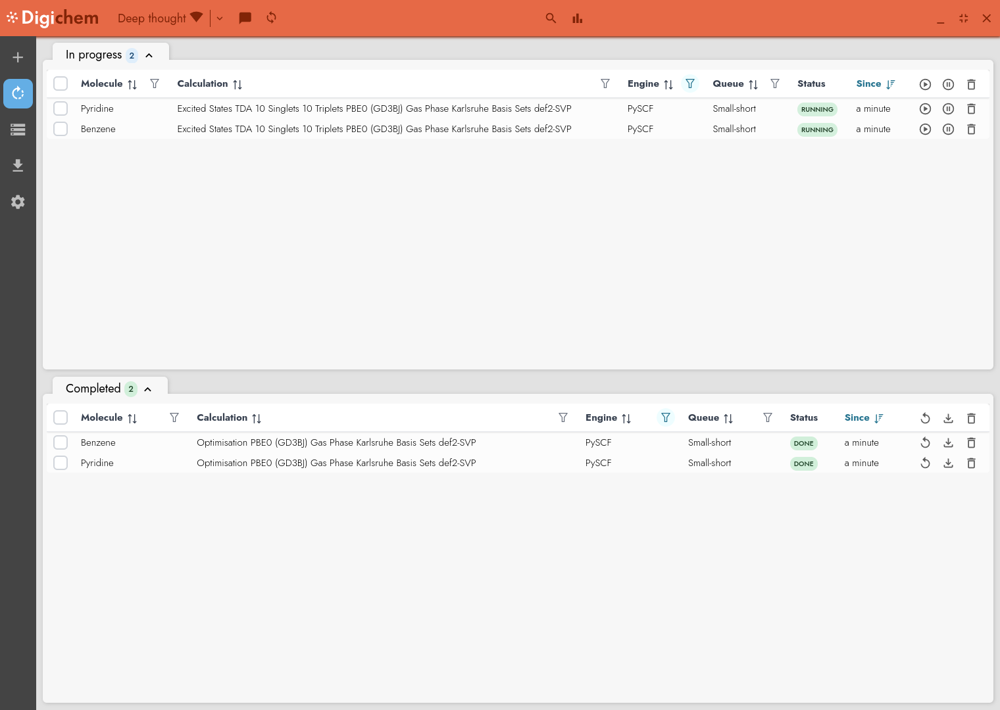
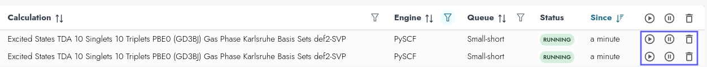
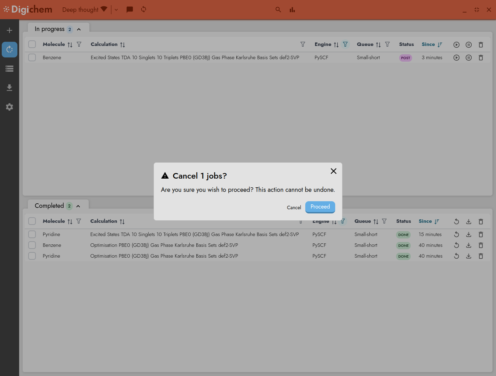
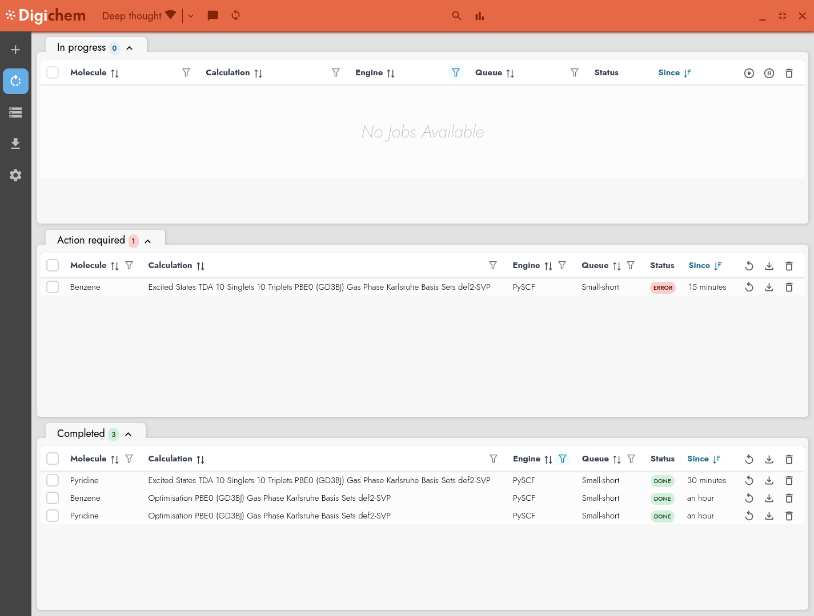
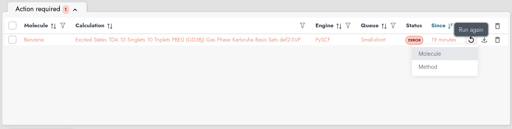
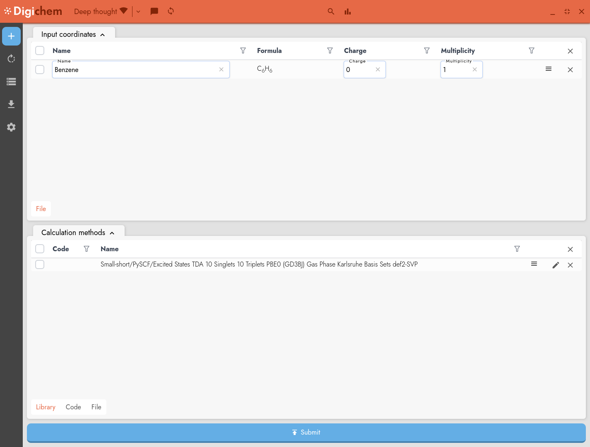
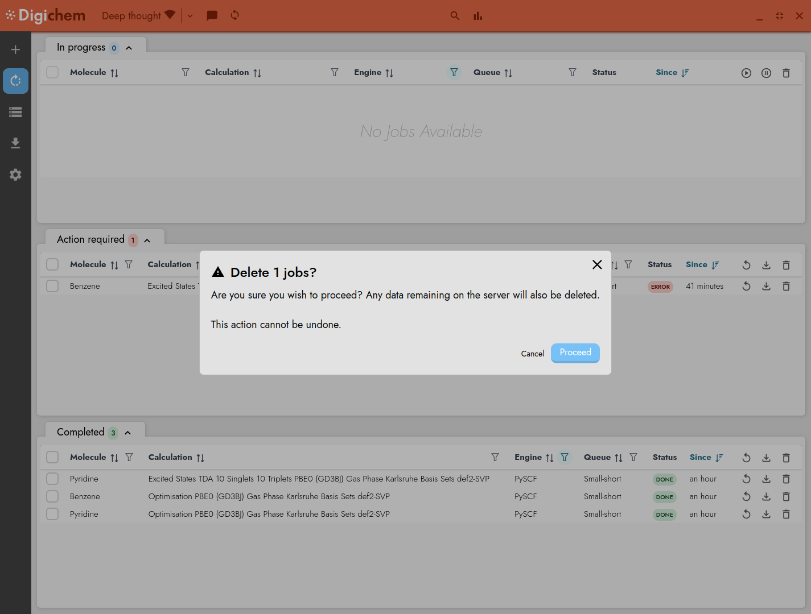

Manage jobs#
In this guide, we’ll go over how to check the progress of your calculations and make changes to them once they have been submitted.
The job screen#
Note
This section of the tutorial follows directly from Submit a calculation.
The job screen displays your recently run calculations:
In the top panel (In progress), we can see the two calculations that we submitted earlier:
Statuses#
The Status column tells us what is currently happening with each calculation. In this example, both calculations are Running, which means that the calculation has started and the server is currently carrying out our computational task.
There are many different types of statuses, and each calculation will change between them as its lifecycle changes. The most common that you are likely to see are:
- Pending
The calculation is currently waiting in the queue. It will start as soon as soon as the server becomes free
- Running
The calculation is ongoing, come back later for your results!
- Post
The main calculation has finished, and Digichem is now carrying out post-analysis of the calculation. This can take some time, especially if you have requested a large number of images to be rendered.
- Done
The calculation has completed finished, and you can download the results.
- Error
Something went wrong, and the calculation stopped early.
See also
Head to Calculation statuses to read more about the available status types.
After a few minutes, the optimisation calculations that we selected will have finished, and the excited states calculations will have started automatically:
Interacting with a running job#
Each running calculation has three controls that can be used to interact with it:
The Pause button (⏸) is used to hold the job. This will prevent the job from starting until it is manually released by the user.
The Play button (▶) is used to release the job. This will allow a previously held job to start.
The Delete button (🗑) will cancel the job. Digichem will ask you to confirm before cancelling the job, but if you accept, there is no way to resume a job once it has been cancelled (except to resubmit it from the beginning once again).
Note
You can only hold a job before it starts (it must be in the Pending state). Once a calculation has started, there is no way to temporarily pause it. You must either wait for it to complete, or permanently cancel it.
Likewise, you can only release a job that is currently in the Hold state.
Let’s imagine that we changed our mind, and decided we were no longer interested in the excited states calculation for benzene (which, in fairness, is not very interesting). To cancel this job, we can click the delete button (🗑) next to that row, and then confirm:
Digichem will take a few moments to clean-up the job (during which time the job may switch to the Post and/or Cleanup status), and then the calculation will stop. The job will move out of the In progress panel and instead will appear in the Action required panel:
This panel is used to show calculations that have stopped with an error (in this case, an error that we caused ourselves by stopping the calculation early). If we changed our minds again, and decided that actually we would like to see Benzene’s excited states, we can use the Run again button:
This will allow us to reload both the input coordinates and calculation method from the failed calculation, so that they will be placed in the Submit screen:
We could now make some changes to the calculation method if we wanted to, and then resubmit the calculation.
If instead we decide that we’re happy never knowing the excited states of benzene, we can simply delete the failed calculation. This will remove any remaining calculation data on the server, and permanently delete the job:
